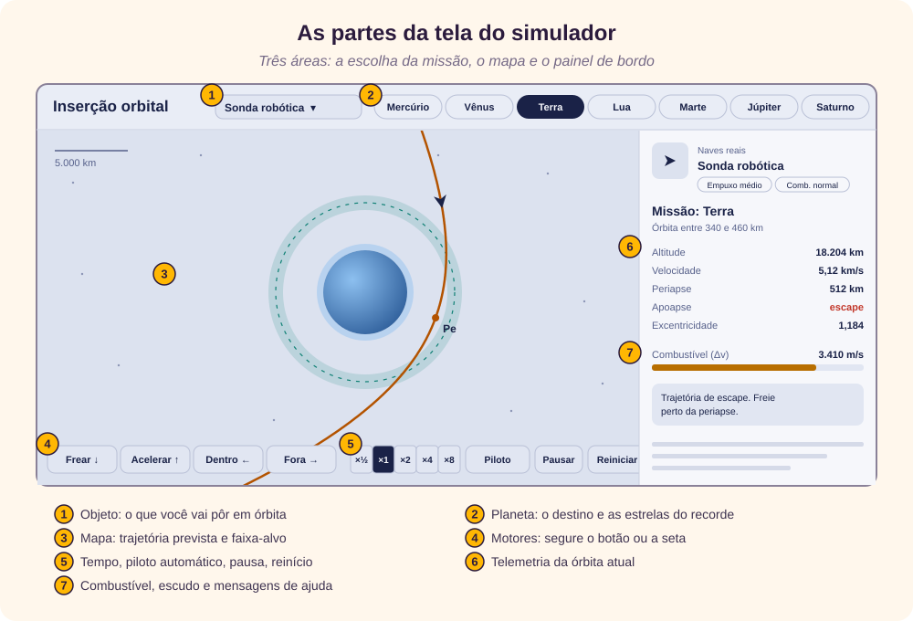
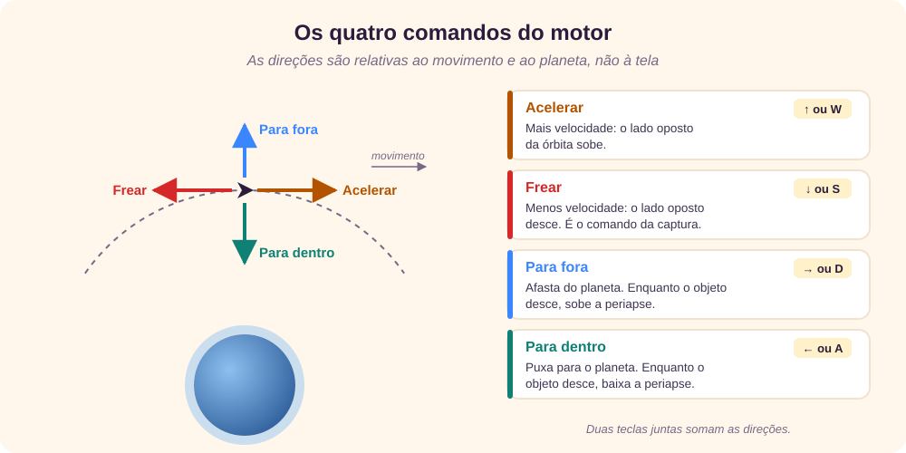
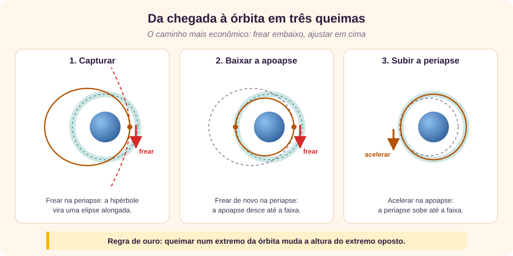
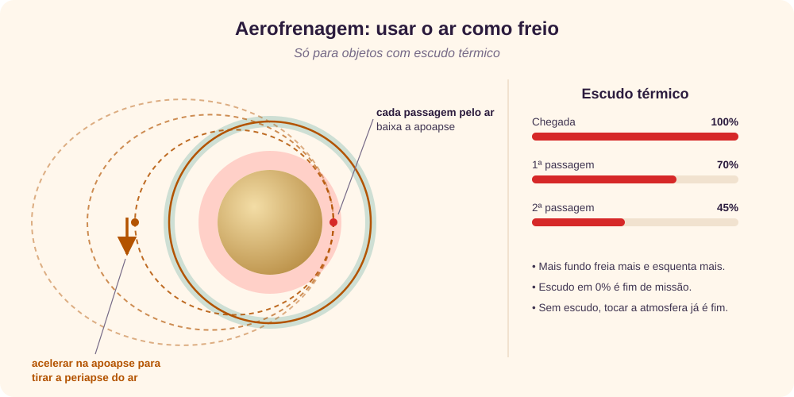
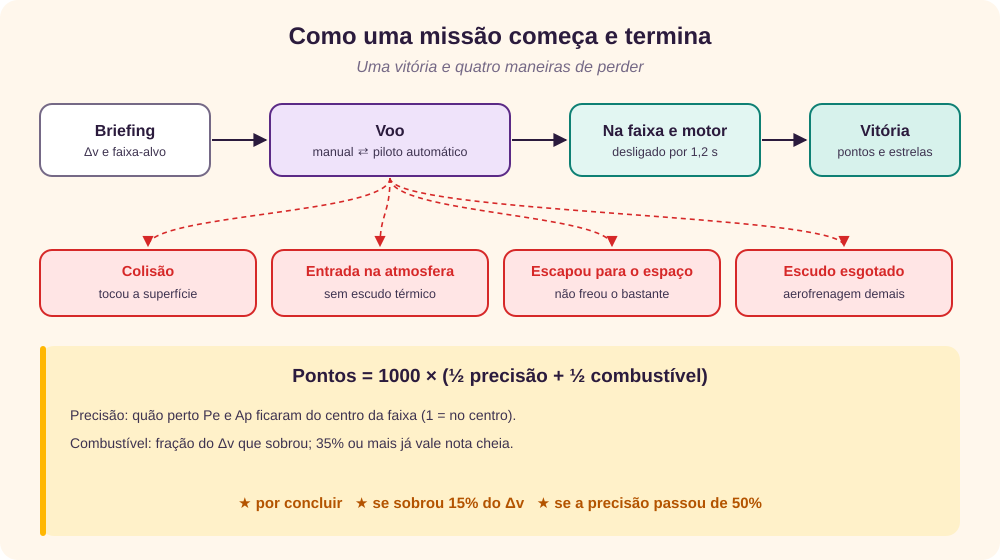
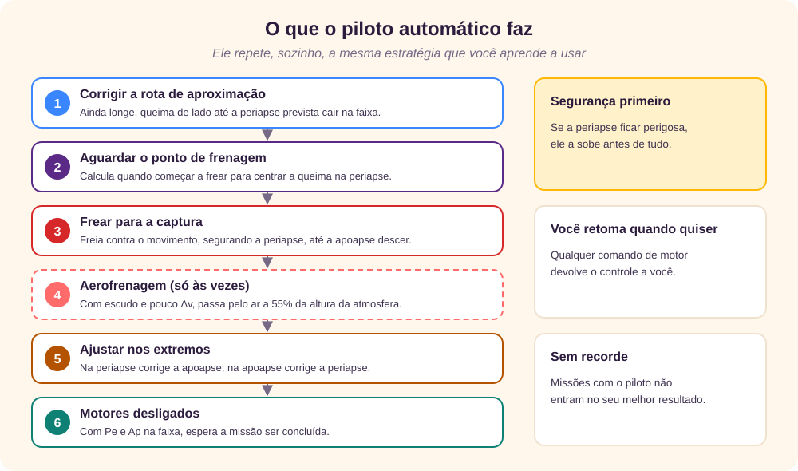

O que é o simulador
Inserção orbital é a manobra que transforma uma passagem rápida por um planeta numa órbita estável ao redor dele. A nave chega rápido demais para ficar e precisa frear na hora e no lugar certos; se frear pouco, passa direto, e se frear errado, cai. [3] [2]
A página Inserção orbital é um pequeno jogo de física que roda no navegador. Você escolhe um objeto, de uma sonda real a uma criatura de ficção científica, e um planeta do Sistema Solar, e precisa deixar o objeto numa órbita dentro de uma faixa de altitude gastando o mínimo de combustível. A trajetória é calculada de verdade, com a gravidade do planeta, e o mapa mostra a cada instante para onde o objeto vai. [1]
O que você vai aprender
- A ler a tela, a telemetria e as mensagens de ajuda.
- O que significam periapse, apoapse, excentricidade e Δv.
- Os quatro comandos do motor e a estratégia de três queimas.
- Como usar a atmosfera como freio, com a aerofrenagem.
- As diferenças entre os 14 objetos e os 7 planetas.
- Como a pontuação é calculada e o que o piloto automático faz.
- Como a física é simulada no código.
A tela em três áreas

No alto ficam as escolhas da missão: a lista Objeto, agrupada em naves reais, corpos celestes e ficção científica, e um botão para cada planeta. Depois de vencer, o botão do planeta mostra as estrelas do seu melhor resultado com o objeto escolhido.
À esquerda está o mapa, sempre centrado no planeta. O círculo verde tracejado e a faixa clara em volta dele formam a faixa-alvo; o anel colado ao planeta é a atmosfera. A linha laranja é a trajetória prevista, o caminho que o objeto vai seguir se o motor ficar desligado. Ela fica vermelha quando atravessa a superfície ou, para objetos sem escudo, a atmosfera. A linha cinza é o rastro do caminho já percorrido, a régua no canto dá a escala, e o zoom se ajusta sozinho conforme o objeto se aproxima.
Embaixo do mapa ficam os quatro botões do motor, a velocidade do tempo, o piloto automático, a pausa e o reinício. À direita, o painel mostra o objeto e suas características, a missão, a telemetria, o combustível restante, o escudo térmico, quando houver, e uma caixa de mensagens que diz o que fazer a seguir.
Conceitos de órbita
Com o motor desligado, um objeto perto de um planeta segue uma cônica com o centro do planeta num dos focos: um círculo, uma elipse, uma parábola ou uma hipérbole. Qual delas depende da velocidade e da altura em que o objeto está. [5] [6]
- Altitude
- Distância até a superfície do planeta, e não até o centro.
- Periapse (Pe)
- O ponto mais baixo da trajetória. [4]
- Apoapse (Ap)
- O ponto mais alto. Numa trajetória de escape ele não existe, e o painel mostra “escape”.
- Excentricidade (e)
- Quanto a órbita se afasta de um círculo: 0 é círculo, entre 0 e 1 é elipse, e de 1 para cima a trajetória é aberta e o objeto vai embora. [5]
- Trajetória de escape
- A hipérbole: o objeto passa pelo planeta uma vez e segue para o espaço. É assim que toda missão começa. [6]
- Δv (delta-v)
- A mudança de velocidade que o motor ainda consegue produzir. No jogo, é o combustível, medido em m/s. [7]
- Faixa-alvo
- O intervalo de altitude em que a periapse e a apoapse precisam ficar.
A missão é vencida quando a periapse e a apoapse ficam dentro da faixa ao mesmo tempo. Não precisa ser um círculo perfeito: uma elipse pouco alongada, inteira dentro da faixa, também vale.
Como começa uma missão
Toda missão começa com um briefing. O objeto chega ao planeta numa trajetória de escape, a cerca de cinco vezes o raio da órbita-alvo, já caindo em direção a ele. A janela informa a faixa-alvo e quanto Δv você tem. Começar entrega o controle a você; Usar piloto automático deixa o computador voar.
A chegada muda a cada tentativa: a direção é sorteada, e a periapse prevista fica entre metade e 1,7 vez a altitude-alvo, nunca abaixo da atmosfera. A velocidade de chegada “no infinito” (v∞), aquela que o objeto teria longe do planeta, depende do planeta e do objeto: um objeto interestelar chega 2,6 vezes mais rápido que uma sonda. [6]
Quanto combustível você recebe
O jogo calcula o custo de uma inserção ideal em duas queimas: uma na periapse de chegada, que transforma a hipérbole numa elipse que toca a órbita-alvo, e outra no extremo oposto, que arredonda a órbita. É a mesma ideia da transferência de Hohmann. [9] O orçamento é esse custo multiplicado pelo fator de combustível do objeto, mais uma pequena folga:
Δv disponível = Δv ideal × fator de combustível + 0,03 × velocidade circular na órbita-alvo
Com fator 1,3, a sonda tem 30% de margem sobre o ideal. Objetos com fator abaixo de 1, como a cápsula de criossono, não têm combustível para fazer tudo com o motor e precisam da atmosfera. Quando o objeto tem escudo mas a aerofrenagem não serve no planeta escolhido, porque não há atmosfera ou porque a órbita-alvo fica longe demais dela, o jogo garante um fator mínimo de 1,1.
Os comandos
O motor só funciona enquanto o botão ou a tecla estiver pressionado. As direções não são as da tela: são medidas em relação ao movimento e ao planeta, como no painel de uma nave real. [15]

| Ação | Teclado | Botão |
|---|---|---|
| Acelerar (prógrado) | ↑ ou W | Acelerar |
| Frear (retrógrado) | ↓ ou S | Frear |
| Para fora (radial) | → ou D | Para fora |
| Para dentro (radial) | ← ou A | Para dentro |
| Pausar e continuar | Espaço | Pausar |
| Reiniciar a missão | R | Reiniciar |
| Velocidade do tempo | + e − | ×½, ×1, ×2, ×4, ×8 |
| Piloto automático | P | Piloto automático |
Duas teclas ao mesmo tempo combinam as direções, como frear e empurrar para fora juntos. Os comandos radiais não mudam o momento angular do objeto: servem principalmente para corrigir a periapse enquanto o objeto ainda está caindo em direção a ela, e gastam mais combustível que frear ou acelerar para o mesmo efeito.
Use ×½ para queimas curtas e precisas e ×4 ou ×8 para esperar o objeto chegar ao ponto certo. As teclas não respondem enquanto uma janela de mensagem estiver aberta.
Estratégia: capturar e ajustar
A forma mais barata de colocar o objeto em órbita segue, quase sempre, três passos.

- Capturar. Espere o objeto chegar perto da periapse, marcada Pe no mapa, e freie. A hipérbole vira uma elipse, e a apoapse, marcada Ap, aparece no mapa.
- Baixar a apoapse. Ainda perto da periapse, ou na próxima passagem por ela, continue freando até a apoapse entrar na faixa-alvo.
- Corrigir a periapse. Vá até a apoapse e acelere se a periapse estiver abaixo da faixa, ou freie se estiver acima.
Por que frear na periapse? É lá que o objeto está mais rápido, e uma mesma mudança de velocidade altera mais a energia da órbita quando a velocidade é alta. Esse é o efeito Oberth, e é por isso que as missões reais fazem a inserção orbital perto do ponto mais baixo da passagem. [8]
A regra de ouro vale para qualquer órbita fechada: uma queima num extremo muda a altura do extremo oposto. Frear na periapse baixa a apoapse; acelerar na apoapse sobe a periapse. [9] [15]
Para fixar
- Freie perto de Pe para ser capturado.
- Para mudar Ap, queime em Pe; para mudar Pe, queime em Ap.
- Prefira queimas curtas: veja a trajetória prevista mudar antes de continuar.
- Solte os comandos quando Pe e Ap ficarem verdes no painel.
Lendo o painel
A telemetria mostra a órbita atual, calculada a partir da posição e da velocidade do objeto a cada quadro.
| Campo | O que mostra |
|---|---|
| Altitude | Distância atual até a superfície. |
| Velocidade | Velocidade em relação ao planeta, em km/s. |
| Periapse | Altitude do ponto mais baixo. Fica verde dentro da faixa e vermelha abaixo do topo da atmosfera; mostra “abaixo da superfície” quando a trajetória bate no chão. |
| Apoapse | Altitude do ponto mais alto. Fica verde dentro da faixa e mostra “escape”, em vermelho, quando a trajetória é aberta. |
| Excentricidade | 0 é círculo; 1 ou mais é escape. |
| Combustível (Δv restante) | Quanto Δv ainda sobra, em m/s, com uma barra. |
| Escudo térmico | Só para objetos com escudo: quanto dele ainda resta. |
A caixa de mensagens lê a situação e sugere o próximo passo. As mais comuns:
| Mensagem | O que fazer |
|---|---|
| “Trajetória de escape. Freie perto da periapse para ser capturado.” | Espere a periapse e freie (passo 1). |
| “Apoapse alta demais. Freie perto da periapse para baixá-la.” | Passo 2 da estratégia. |
| “Periapse baixa demais. Acelere perto da apoapse para subi-la.” | Passo 3 da estratégia. |
| “A órbita cruza a superfície” ou “cruza a atmosfera”. | Perigo: acelere na apoapse ou empurre para fora antes de chegar lá. |
| “Aerofrenagem em andamento: o escudo está esquentando.” | Só com escudo: acompanhe a barra do escudo. |
| “Na faixa. Desligue o motor para confirmar.” | Solte os comandos. |
| “Sem combustível. Torça para a órbita servir.” | Não há mais o que fazer com o motor. |
Aerofrenagem
Dois objetos têm escudo térmico: a cápsula tripulada e a cápsula de criossono. Para eles, a atmosfera deixa de ser uma parede e vira um freio gratuito: cada passagem pelo ar tira velocidade sem gastar combustível. Missões reais a Vênus e a Marte usaram essa técnica para economizar propelente. [10]

O jogo modela o ar com uma densidade que cresce exponencialmente conforme o objeto desce e vale zero no topo da atmosfera. Quanto mais fundo e mais rápido, mais forte a frenagem e maior o desgaste do escudo. Ele aguenta dissipar cerca de 1,4 vez o Δv da inserção ideal; se chegar a 0%, a missão termina.
A receita: baixe a periapse para dentro da atmosfera, um pouco abaixo do topo; deixe as passagens baixarem a apoapse até a faixa-alvo; e, então, acelere na apoapse para tirar a periapse do ar. Sem esse último passo, o objeto continua perdendo altura a cada volta.
Objetos e planetas
Cada objeto muda quatro números da missão: o empuxo, quanto o motor acelera; o combustível, o fator sobre o Δv ideal; a chegada, a velocidade com que ele aparece; e a largura da faixa-alvo. Alguns têm ainda uma regra especial. O painel resume esses números em etiquetas, como “Empuxo baixo” ou “Faixa estreita”.
| Objeto | Empuxo | Combustível | Chegada | Particularidade |
|---|---|---|---|---|
| Sonda robótica | médio | normal | normal | Equilibrada: a melhor para aprender. |
| Cápsula tripulada | médio | normal | normal | Escudo térmico. |
| Telescópio espacial | médio | normal | normal | Faixa estreita (55% da normal). |
| Módulo de estação espacial | baixo | normal | lenta | Pesado: comece as queimas cedo. |
| Vela solar | baixo | farto | lenta | Empuxo minúsculo e quase inesgotável. [19] |
| Asteroide rebocado | baixo | farto | normal | Faixa larga. |
| Núcleo de cometa | médio | farto | normal | Faixa larga; jatos de gás aleatórios. |
| Pequena lua (tipo Fobos) | baixo | farto | lenta | Faixa larga. [18] |
| Objeto interestelar (tipo ʻOumuamua) | alto | normal | rápida | Chega 2,6 vezes mais rápido. [17] |
| Nave geracional | baixo | farto | lenta | Faixa larga. |
| Cargueiro de dobra | extremo | normal | rápida | Faixa estreita; use toques curtos em ×½. |
| Leviatã do vácuo | médio | escasso | normal | Regenera energia com o motor desligado. |
| Cápsula de criossono | médio | escasso | normal | Escudo térmico; faixa larga. |
| Esfera alienígena | alto | normal | rápida | Todos os comandos invertidos. |
Os jatos do cometa ligam e desligam sozinhos, em direções sorteadas, e desviam a trajetória sem aviso. O leviatã recupera, com o motor desligado, 35% da energia total a cada volta na órbita-alvo. Com a cápsula de criossono, nos planetas com atmosfera, a aerofrenagem é obrigatória.
Os planetas
Cada planeta usa o raio e o parâmetro gravitacional (μ) reais, por isso a mesma manobra exige muito mais Δv em Júpiter do que na Lua. [14]
| Planeta | Atmosfera até | Faixa-alvo | Chegada (v∞) | Observação |
|---|---|---|---|---|
| Mercúrio | sem atmosfera | 400 ± 60 km | 4,0 km/s | Dá para passar raspando, só não encoste no chão. |
| Vênus | 200 km | 500 ± 70 km | 3,2 km/s | Atmosfera densa e alta. |
| Terra | 100 km | 400 ± 60 km | 3,0 km/s | Perto da altitude da Estação Espacial Internacional. [16] |
| Lua | sem atmosfera | 100 ± 20 km | 0,8 km/s | Gravidade fraca: tudo devagar e com pouco Δv. |
| Marte | 80 km | 300 ± 50 km | 2,6 km/s | Atmosfera fina, mas perigosa. |
| Júpiter | 1.000 km | 100.000 ± 12.000 km | 6,0 km/s | Gravidade enorme: a frenagem é longa. |
| Saturno | 800 km | 150.000 ± 15.000 km | 5,0 km/s | A faixa fica além dos anéis principais. |
A tolerância e a chegada da tabela são as da sonda; elas são multiplicadas pelos fatores de cada objeto.
Vitória, derrota e pontuação

A missão é vencida quando a periapse e a apoapse ficam dentro da faixa com o motor desligado por 1,2 segundo seguido. Há quatro maneiras de perder: bater na superfície; entrar na atmosfera sem escudo; passar pelo planeta sem frear o bastante e seguir para o espaço; e gastar todo o escudo térmico.
precisão = 1 − (|Pe − alvo| + |Ap − alvo|) ÷ (2 × tolerância) combustível = Δv restante ÷ Δv disponível pontos = 1000 × (0,5 × precisão + 0,5 × mín(1; combustível ÷ 0,35))
Metade da nota vem da precisão, em que uma órbita circular no centro da faixa vale 1, e metade da economia, em que guardar 35% do Δv já dá a nota máxima. As estrelas são três: uma por concluir, outra se sobraram pelo menos 15% do Δv e outra se a precisão passou de 50%.
O melhor resultado de cada combinação de objeto e planeta fica salvo no navegador e aparece no painel e nos botões dos planetas. Missões em que o piloto automático foi usado, mesmo por um instante, não contam como recorde. [20]
O piloto automático
O piloto automático, no botão ou na tecla P, assume o controle e faz a inserção sozinho, com a mesma lógica deste tutorial. É uma boa forma de ver a estratégia funcionando antes de tentar no manual.

Enquanto o objeto ainda está longe, o piloto corrige a rota com queimas de lado até a periapse prevista cair na faixa. Depois calcula quando começar a frear, para que a queima fique centrada na periapse, e freia contra o movimento enquanto segura a periapse no lugar. Com a órbita fechada, faz os ajustes finos nos extremos: na periapse corrige a apoapse, e na apoapse corrige a periapse, sempre dosando o empuxo para não passar do ponto.
Com um objeto de escudo e pouco combustível para frear só no motor, ele escolhe a aerofrenagem: mira a periapse a 55% da altura da atmosfera, faz as passagens e tira a periapse do ar quando a próxima passagem já levaria a apoapse para a faixa. Se em algum momento a periapse ficar perigosa, subi-la passa a ser a prioridade.
Qualquer comando do motor devolve o controle a você. O piloto não faz milagre: se o combustível ou o escudo não bastarem, a missão falha do mesmo jeito.
A simulação por dentro
Para quem quer entender o código: o simulador é um programa em JavaScript que, a cada quadro, avança a física, desenha o mapa num canvas e atualiza o painel. [21]
Gravidade e integração
Além do motor, só existe uma força: a gravidade do planeta, a = −μ·r / |r|³, em que μ é o parâmetro gravitacional padrão, a constante gravitacional vezes a massa do planeta. [14] A posição e a velocidade avançam pelo método velocity Verlet, que conserva bem a energia em órbitas longas. [13] O passo é adaptativo: fica curto perto do planeta, onde tudo acontece rápido, e mais curto ainda dentro da atmosfera.
v ← v + ½·h·(gravidade(x) + empuxo) x ← x + h·v v ← v + ½·h·(gravidade(x) + empuxo) h ≤ 0,002 · r / v (0,0005 dentro da atmosfera) h ≤ T / 3000 (T = período da órbita-alvo)
Da posição à órbita
Para desenhar a trajetória prevista e preencher o painel, o jogo converte posição e velocidade em elementos orbitais. O vetor excentricidade aponta para a periapse e tem o tamanho da excentricidade; o momento angular h dá o parâmetro p da cônica. [12]
e = ((v² − μ/r)·r − (r·v)·v) / μ p = h² / μ Pe = p / (1 + e) Ap = p / (1 − e) (só se e < 1) r(θ) = p / (1 + e·cos θ)
A última fórmula desenha a trajetória prevista ponto a ponto, sem simular o futuro. A velocidade em cada altura segue a equação vis-viva, v² = μ·(2/r − 1/a), que o jogo usa para calcular a chegada e o Δv ideal. [11]
Tempo e motor
A escala de tempo faz uma volta na órbita-alvo durar cerca de 24 s em ×1, e o empuxo de referência entrega todo o Δv ideal em 8% de uma volta, cerca de 2 segundos; o fator de empuxo de cada objeto multiplica esse valor. Assim, o jogo tem o mesmo ritmo em todos os planetas, mesmo com gravidades muito diferentes.
Dicas e erros comuns
Comece a frear antes da periapse
Queimas longas devem ficar centradas nela, metade antes e metade depois. Objetos de empuxo baixo, como a vela solar, precisam começar bem cedo.
Olhe a linha, não o objeto
A trajetória prevista muda enquanto você queima. Solte o botão quando ela ficar como você quer.
Vermelho é aviso
Trajetória vermelha atravessa o chão ou a atmosfera. Corrija antes de chegar à periapse, empurrando para fora ou acelerando na apoapse.
Use o tempo a seu favor
×4 ou ×8 para esperar, ×½ para ajustes finos, Espaço para pausar e pensar.
Não persiga o círculo perfeito
A vitória exige só que Pe e Ap fiquem na faixa. Cada m/s economizado vale ponto.
Aprenda com o piloto
Rode uma missão no automático, observe onde ele queima e tente bater a pontuação no manual.
Revisão rápida
Tente responder antes de abrir cada pergunta.
1. Por que frear na periapse, e não em outro ponto?
Porque lá o objeto está mais rápido, e o mesmo Δv muda mais a energia da órbita: é o efeito Oberth.
2. A apoapse está alta demais. Onde queimar, e em que direção?
Na periapse, freando.
3. O que significa a apoapse mostrar “escape”?
Que a trajetória é aberta (e ≥ 1): sem frear, o objeto passa pelo planeta e segue para o espaço.
4. Quando a missão é considerada vencida?
Quando a periapse e a apoapse estão dentro da faixa e o motor fica desligado por 1,2 segundo.
5. Que objetos podem usar a aerofrenagem, e em que planetas ela serve?
Os que têm escudo térmico, a cápsula tripulada e a cápsula de criossono, em Vênus, na Terra e em Marte.
6. Sobraram 40% do Δv e a precisão foi 0,8. Quantos pontos e estrelas?
1000 × (0,5 × 0,8 + 0,5 × 1) = 900 pontos e três estrelas.
7. Por que o resultado do piloto automático não vira recorde?
Porque o recorde mede a sua pilotagem; qualquer uso do piloto marca a missão.
8. Que método numérico avança a física do jogo?
O velocity Verlet, com passo de tempo adaptativo.
Referências
- Giovani Perotto Mesquita, “Inserção orbital”, simulador interativo, giovanipm.github.io/Inserção orbital.html.
- NASA Science (em inglês), “Basics of Space Flight”, acesso em 01/10/2026, science.nasa.gov/learn/basics-of-space-flight.
- Wikipedia (em inglês), “Orbit insertion”, acesso em 01/10/2026, en.wikipedia.org/wiki/Orbit_insertion.
- Wikipedia (em inglês), “Apsis”, acesso em 01/10/2026, en.wikipedia.org/wiki/Apsis.
- Wikipedia (em inglês), “Orbital eccentricity”, acesso em 01/10/2026, en.wikipedia.org/wiki/Orbital_eccentricity.
- Wikipedia (em inglês), “Hyperbolic trajectory”, acesso em 01/10/2026, en.wikipedia.org/wiki/Hyperbolic_trajectory.
- Wikipedia (em inglês), “Delta-v”, acesso em 01/10/2026, en.wikipedia.org/wiki/Delta-v.
- Wikipedia (em inglês), “Oberth effect”, acesso em 01/10/2026, en.wikipedia.org/wiki/Oberth_effect.
- Wikipedia (em inglês), “Hohmann transfer orbit”, acesso em 01/10/2026, en.wikipedia.org/wiki/Hohmann_transfer_orbit.
- Wikipedia (em inglês), “Aerobraking”, acesso em 01/10/2026, en.wikipedia.org/wiki/Aerobraking.
- Wikipedia (em inglês), “Vis-viva equation”, acesso em 01/10/2026, en.wikipedia.org/wiki/Vis-viva_equation.
- Wikipedia (em inglês), “Eccentricity vector”, acesso em 01/10/2026, en.wikipedia.org/wiki/Eccentricity_vector.
- Wikipedia (em inglês), “Verlet integration”, acesso em 01/10/2026, en.wikipedia.org/wiki/Verlet_integration.
- Wikipedia (em inglês), “Standard gravitational parameter”, acesso em 01/10/2026, en.wikipedia.org/wiki/Standard_gravitational_parameter.
- Wikipedia (em inglês), “Orbital maneuver”, acesso em 01/10/2026, en.wikipedia.org/wiki/Orbital_maneuver.
- Wikipedia (em inglês), “International Space Station”, acesso em 01/10/2026, en.wikipedia.org/wiki/International_Space_Station.
- Wikipedia (em inglês), “ʻOumuamua”, acesso em 01/10/2026, en.wikipedia.org/wiki/ʻOumuamua.
- Wikipedia (em inglês), “Phobos (moon)”, acesso em 01/10/2026, en.wikipedia.org/wiki/Phobos_(moon).
- Wikipedia (em inglês), “Solar sail”, acesso em 01/10/2026, en.wikipedia.org/wiki/Solar_sail.
- MDN Web Docs (em inglês), “Window: localStorage property”, acesso em 01/10/2026, developer.mozilla.org/en-US/docs/Web/API/Window/localStorage.
- MDN Web Docs (em inglês), “Canvas API”, acesso em 01/10/2026, developer.mozilla.org/en-US/docs/Web/API/Canvas_API.